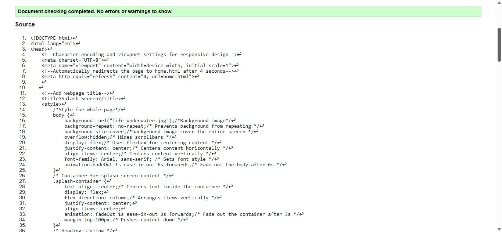
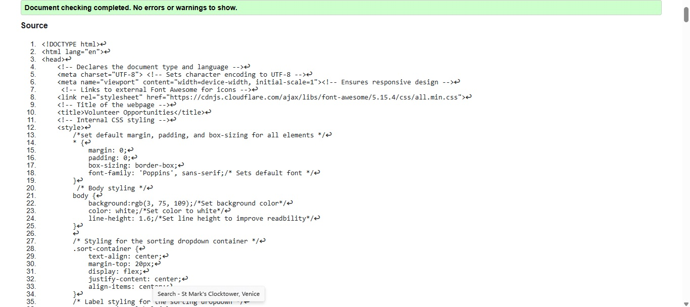
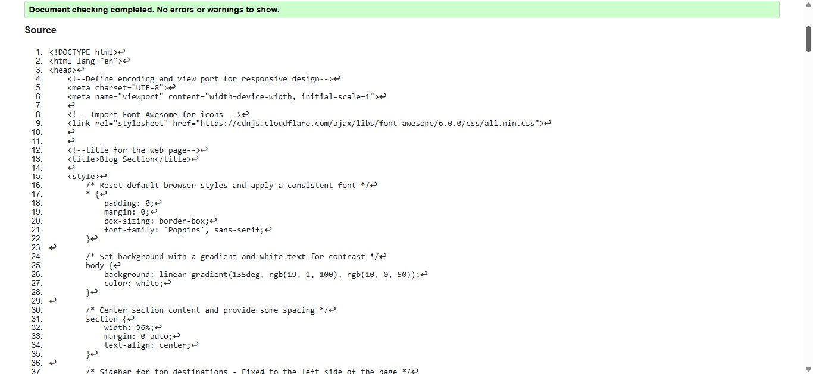

🌊 Life Below Water
Home
Gallery
Table
Profile
Volunteer
Sitemap
Team
Feedback
Yenulka Desilva, Student 1
Splash Page validation report

Back to Page Editor page
Link back to Page Editor.
Volunteer Page validation report

Back to Page Editor page
Link back to Page Editor.
Content Page validation report

Back to Page Editor page
Link back to Page Editor.
Go top